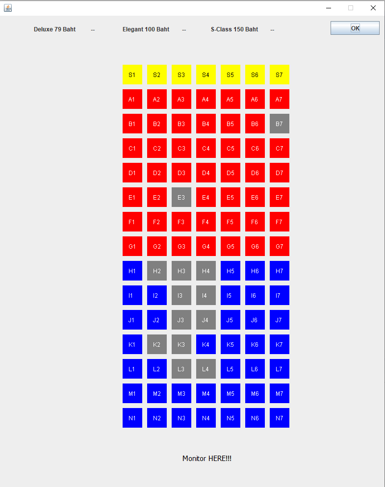
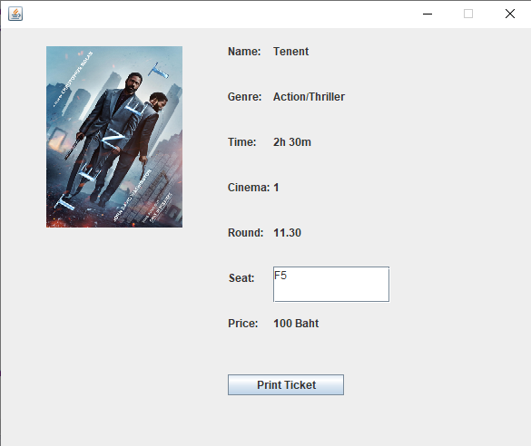
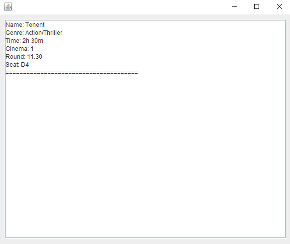

- เมื่อถูกเรียกใช้จะปรากฏรูปโปสเตอร์ของหนังโดยนำมาจากไฟล์ .JPG ตามลำดับ ส่วน Attribute ต่างๆในคลาสจะรับมาจาก .TXT ไฟล์โดยอ่านจาก method readFile() เมื่อกดที่ปุ่มรอบหนังจะนำไปสู่ Page2
- โดยคลาสนี้จะสร้าง Class seat แทนที่นั่งขนาด 7*15 ขึ้นมาและเมื่อทำการเลือกที่นั่ง สามารถเลือกได้มากกว่า 1 ที่นั่งเมื่อเลือกเสร็จจะมีการเก็บข้อมูลของราคาที่นั่งและจำนวนที่เลือกด้านบน บางที่นั่งจะปรากฏเป็นสีเทาเกิดจากได้มีการขายที่นั่งดังกล่าวไปก่อนหน้าแล้วไม่สามารถเลือกได้อีก โดยนำข้อมูลจาก .TXT ไฟล์
- เมื่อทำการเลือกที่นั่งเรียบร้อยให้กดที่ปุ่ม OK จะนำไปสู่ Page3
- จะถูกเรียกโดยคลาส Page2 ด้านในจะมี Attribute เกี่ยวกับ สี ขนาด ตำแหน่ง และ สถานะ
- ในคลาสนี้จะแสดงข้อมูลที่ผู้ใช้เลือกไว้ในหน้า Page1 และ Page2 มาแสดงผลลัพธิ์ก่อนจะทำการ Print Ticket และเอาค่าจากตัวแปรเก็บลง .TXT ไฟล์
- จะนำข้อมูลจากตัวแปรมาแสดงในหน้านี้เป็นอันเสร็จขั้นตอนการซื้อตั๋วหนัง